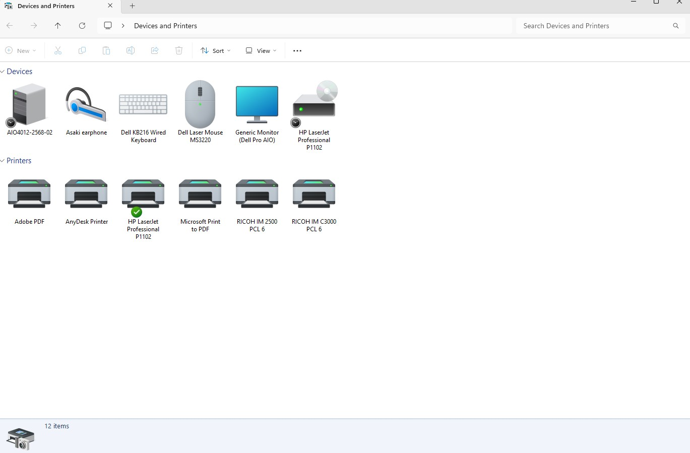
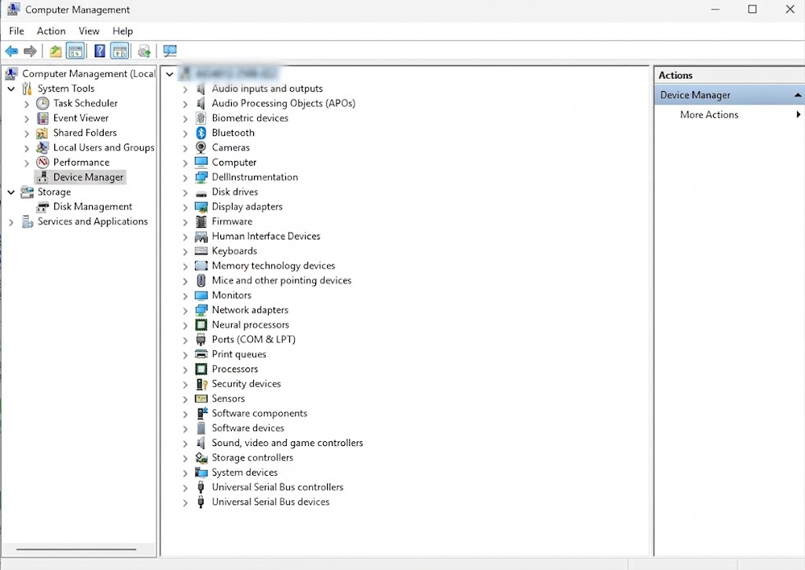
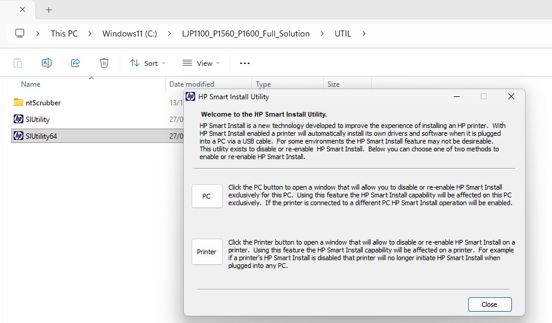
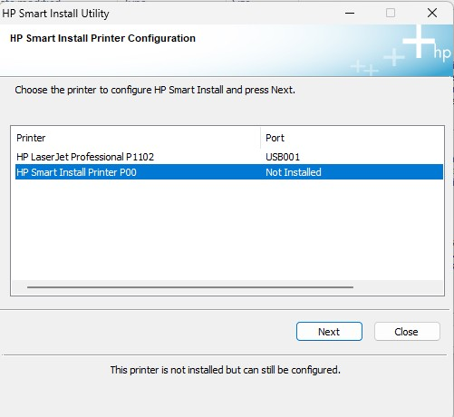
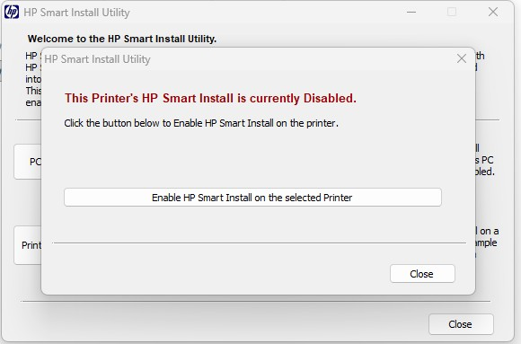

Printer Troubleshooting Guide
วิธีแก้ปัญหาการติดตั้ง Printer
บน Windows 11
บน Windows 11
คู่มือแบบสไลด์สำหรับไล่ตรวจสอบและติดตั้ง Printer พร้อมภาพประกอบและวิดีโอสาธิต
HP LaserJet P1102 • Step-by-Step
ลบ Printer จาก Devices and Printers และลบอุปกรณ์ที่เกี่ยวข้องจาก Device Manager จากนั้น Restart ก่อนเข้าสู่ขั้นตอน Driver และ HP Smart Install

เปิด Control Panel → Devices and Printers

คลิกขวา Start → Device Manager แล้วตรวจสอบอุปกรณ์ที่เกี่ยวข้อง
หลังลบ Printer และอุปกรณ์จาก Device Manager แล้ว ให้ถอดสาย USB ของ HP LaserJet P1102 ออกจากคอมพิวเตอร์ และยังไม่ต้องเสียบกลับ
Restart คอมพิวเตอร์ 1 ครั้ง เพื่อให้ Windows โหลดระบบใหม่และเคลียร์การเชื่อมต่อของอุปกรณ์เดิม

ดาวน์โหลด Driver สำหรับ HP LaserJet P1102 แล้วแตกไฟล์ออกมา เตรียมโฟลเดอร์สำหรับเข้าสู่ Utility

เมื่อสถานะของเครื่องเปลี่ยนเป็น สีแดง แล้ว ให้ปิดโปรแกรมได้เลย

ลบจาก Devices and Printers
Uninstall อุปกรณ์ที่เกี่ยวข้อง
ถอดสาย USB ออกจาก PC
Restart Windows 11
ดาวน์โหลดและแตกไฟล์
Utility → Next → Disable → รอสีแดง 🔴
ติดตั้ง Driver ใหม่
ตรวจสอบและ Print Test Page